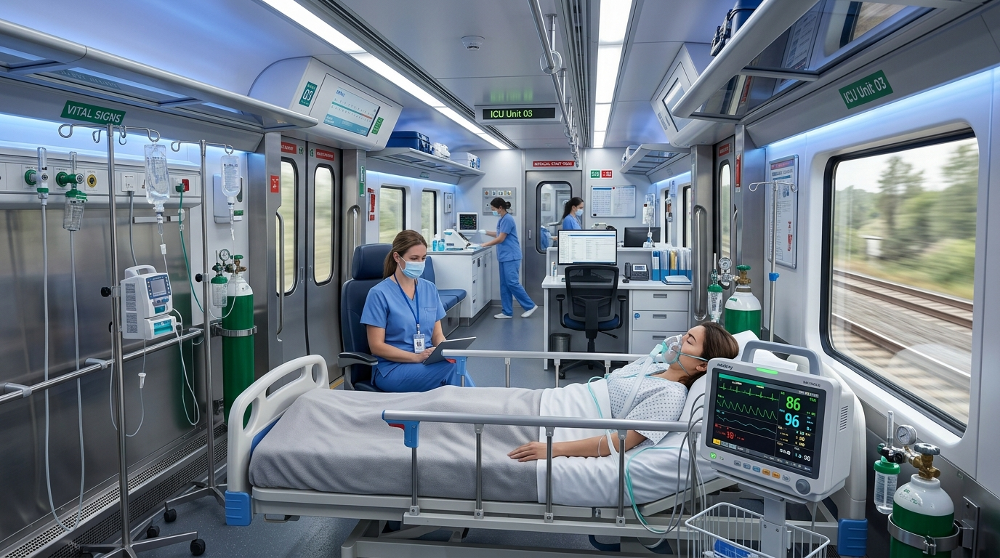

Bridging the critical healthcare transit divide by converting rail capacity into an emergency life corridor.
In developing and growing economies, advanced tertiary healthcare facilities—such as cardiac surgical units, comprehensive cancer institutes, and specialized trauma neuro-rehabilitation centres—are heavily concentrated in Tier-1 metropolitan cities (Mumbai, Delhi, Bengaluru, Chennai).
When a patient in a Tier-2 or Tier-3 city experiences a critical condition, families face an agonizing dilemma: road ambulances take 10–18 hours through hazardous road vibrations and traffic bottlenecks, while chartered air ambulances cost upwards of ₹3,00,000 to ₹6,00,000, which is inaccessible for 95% of households.
The Solution: By attaching one dedicated medical-equipped coach (Coach M-1) to scheduled express and semi-high-speed trains, patients receive continuous ICU hospital care, medical doctor escorts, and smooth rail transit directly to metro hospitals at an affordable cost.

| Feature / Parameter | MediRail Coach M-1 (Project Model) | Chartered Air Ambulance | Long-Distance Road Ambulance |
|---|---|---|---|
| Average Cost | ₹7,500 – ₹15,000 (Subsidized) | ₹2,50,000 – ₹5,50,000 | ₹25,000 – ₹45,000 |
| All-Weather Reliability | 100% (Operates in heavy rain & fog) | Weather-sensitive (Grounded in storm/fog) | Traffic & highway bottleneck delays |
| Barometric Pressure Shock | Zero Altitude Change (Safe for Neuro/Cardiac) | High risk of hypoxia/pressure variance | Zero altitude change |
| ICU Equipment Space | Spacious (Hamilton Ventilator + Central O2) | Very cramped cabin | Cramped van layout |
| Family Attendant Comfort | Full Reclining Companion Seat Beside Bed | Restricted (Max 1 person) | Very uncomfortable bench seat |
| Vibration & Shock | Hydraulic Air-Suspension Rail Bogie | Moderate air turbulence | High road bumps & jerks |